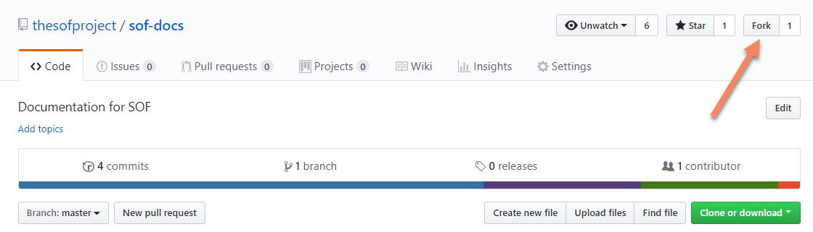

SOF documentation generation¶
These instructions will walk you through generating the SOF Project’s documentation and publishing it to https://thesofproject.github.io. You can also use these instructions to generate the ARCN documentation on your local system.
Documentation overview¶
The SOF Project content is written using the reStructuredText markup language (.rst file extension) with Sphinx extensions, and processed using Sphinx to create a formatted stand-alone website. Developers can view this content either in its raw form as .rst markup files, or you can generate the HTML content and view it with a web browser directly on your workstation.
You can read details about reStructuredText, and Sphinx from their respective websites.
The project’s documentation contains the following items:
- ReStructuredText source files used to generate documentation found at the http://thesofproject.github.io website. All of the reStructuredText sources are found in this thesofproject/sof-docs repo.
The reStructuredText files are processed by the Sphinx documentation system, and make use of the breathe extension for including the doxygen-generated API material.
Set up the documentation working folders¶
You’ll need git installed to get the working folders set up:
For an Ubuntu development system use:
sudo apt-get install git
For a Fedora development system use
sudo dnf install git
We use github.io for publishing the generated documentation. Here’s the recommended folder setup for documentation contributions and generation:
The parent thesofproject folder is there because we’ll also be using a
publishing area (thesofproject.github.io) later in these steps. It’s
best if the sof-docs folder is an ssh clone of your personal fork of the
upstream project repos (though https clones work too):
Use your browser to visit https://github.com/thesofproject and do a fork of the
sof-docsrepo to your personal GitHub account.)At a command prompt, create the working folder and clone the sof-docs repository to your local computer (and if you have publishing rights, the thesofproject.github.io repo). If you don’t have publishing rights you’ll still be able to generate the docs locally, but not publish them:
cd ~ mkdir thesofproject && cd thesofproject git clone git@github.com:<github-username>/thesofproject/sof-docs.git
The documentation of the sof source code generated by doxygen is referenced and included by the sof-docs. Clone the sof repository too:
git clone git@github.com:thesofproject/sof.git # use next until merged back to master cd sof git checkout next cd ..
For the cloned local repos, tell git about the upstream repo:
cd sof-docs git remote add upstream git@github.com:thesofproject/sof-docs.gitIf you haven’t done so already, be sure to configure git with your name and email address for the signed-off-by line in your commit messages:
git config --global user.name "David Developer" git config --global user.email "david.developer@company.com"
Installing the documentation tools¶
Our documentation processing has been tested to run with:
- Python 3.6.3
- Doxygen version 1.8.13
- Sphinx version 1.7.5
- Breathe version 4.9.1
- docutils version 0.14
- sphinx_rtd_theme version 0.4.0
The SOF documentation makes use of additional Sphinx extensions used for creating drawings:
- sphinxcontrib-plantuml
- sphinx.ext.graphviz (included with Sphinx)
Note
The plantuml extension uses Java to render the uml drawing syntax into an image. You’ll need to have a Java runtime environment (JRE) installed when generating documentation.
Depending on your Linux version, install the needed tools:
For Ubuntu use:
sudo apt-get install doxygen python3-pip python3-wheel make \ default-jre graphvizFor Fedora use:
sudo dnf install doxygen python3-pip python3-wheel make \ default-jre graphviz
And for either Linux environment, install the remaining python-based tools:
cd ~/thesofproject/sof-docs
pip3 install --user -r scripts/requirements.txt
And with that you’re ready to generate the documentation.
Documentation presentation theme¶
Sphinx supports easy customization of the generated documentation
appearance through the use of themes. Replace the theme files and do
another make html and the output layout and style is changed.
The read-the-docs theme is installed as part of the
requirements.txt list above.
Running the documentation processors¶
The sof-docs directory has all the .rst source files, extra tools, and Makefile for generating a local copy of the SOF technical documentation.
cd ~/thesofproject/sof
./autogen.sh
./configure --enable-doc
make doc
cd ~/thesofproject/sof-docs
make html
Depending on your development system, it will take about 10 seconds to
collect and generate the HTML content. When done, you can view the HTML
output with your browser started at ~/thesofproject/sof-docs/_build/html/index.html
Publishing content¶
If you have merge rights to the thesofproject repo called thesofproject.github.io, you can update the public project documentation found at https://thesofproject.github.io.
You’ll need to do a one-time clone of the upstream repo (we publish directly to the upstream repo rather than to a personal forked copy):
cd ~/thesofproject
git clone git@github.com:thesofproject/thesofproject.github.io.git
Then, after you’ve verified the generated HTML from make html looks
good, you can push directly to the publishing site with:
make publish
This will delete everything in the publishing repo’s latest folder (in case the new version has deleted files) and push a copy of the newly-generated HTML content directly to the GitHub pages publishing repo. The public site at https://thesofproject.github.io will be updated within a few minutes so it’s best to verify the locally generated html before publishing.